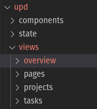
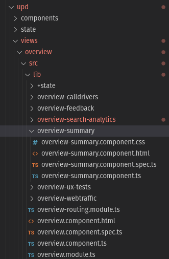

Usability Performance Dashboard (UPD)
Building the foundation with  ngular
ngular
You can view the setup documentation from Google Docs
To access the pages of the project

Path:
./libs/upd/views/overview|pages|projects|tasks/
For this demonstration, we will be going through Overview Summary

Path:
./libs/upd/views/overview/src/lib/overview-summary
TS File
import { Component, OnInit } from '@angular/core';
import { catchError, map, of } from 'rxjs';
import dayjs from 'dayjs';
import { MultiSeries, SingleSeries } from '@amonsour/ngx-charts';
import { OverviewFacade } from '../+state/overview/overview.facade';
import { Metrics } from '../query';
@Component({
selector: 'app-overview-summary',
templateUrl: './overview-summary.component.html',
styleUrls: ['./overview-summary.component.css'],
})
export class OverviewSummaryComponent implements OnInit {
uniqueVisitors = 0;
uniqueVisitorsPrev = 0;
visits = 0;
visitsPrev = 0;
pageViews = 0;
pageViewsPrev = 0;
gscImp = 0;
gscImpPrev = 0;
gscCTR = 0;
gscCTRPrev = 0;
gscAverage = 0;
gscAveragePrev = 0;
metrics: Metrics[] = [];
gscMetrics: Metrics[] = [];
taskSurvey: { id: number; task: string; completion: number }[] = [];
taskSurveyCols: { field: string; header: string }[] = [];
dyfChart: MultiSeries = [];
whatWasWrongChart: MultiSeries = [];
barChartData$ = this.overviewService.overviewData$.pipe(
map(parseDataForBarchart),
catchError((e) => {
console.error(e);
return of([] as MultiSeries);
})
);
constructor(private overviewService: OverviewFacade) {}
ngOnInit(): void {
this.overviewService.init();
this.uniqueVisitors = 4260300;
this.uniqueVisitorsPrev = 4500100;
this.visits = 8248019;
this.visitsPrev = 7902234;
this.pageViews = 28261637;
this.pageViewsPrev = 26234645;
this.getMetrics(
'Unique visitors',
this.uniqueVisitors,
this.uniqueVisitorsPrev,
this.metrics
);
this.getMetrics('Visits', this.visits, this.visitsPrev, this.metrics);
this.getMetrics('Page views', this.pageViews, this.pageViewsPrev, this.metrics);
this.gscImp = 51006993;
this.gscImpPrev = 48650123;
this.gscCTR = 0.10;
this.gscCTRPrev = 0.099;
this.gscAverage = 5;
this.gscAveragePrev = 5;
this.getMetrics('Total impressions from Google', this.gscImp, this.gscImpPrev, this.gscMetrics);
this.getMetrics('Click through rate from Google', this.gscCTR, this.gscCTRPrev, this.gscMetrics);
this.getMetrics('Average rank on Google', this.gscAverage, this.gscAveragePrev, this.gscMetrics);
this.taskSurvey = taskSurvey;
this.taskSurveyCols = [
{ field: 'task', header: 'Task' },
{ field: 'completion', header: 'Task Success Survey Completed' },
];
this.dyfChart = dyf;
this.whatWasWrongChart = whatWasWrong;
}
getMetrics = (name: string, curr: number, prev: number, arr: Metrics[]) => {
const difference = diff(curr, prev);
const sign = getSign(difference);
return arr.push({
metric: name,
current: curr,
past: prev,
arrow: sign[0],
textStyle: sign[1],
comparison: absoluteNum(difference),
});
};
}
const diff = (a: number, b: number) => {
return (a - b) / b;
};
const percDiff = (a: number, b: number) => {
const diff = Math.round(((a - b) / b) * 100);
return diff > 0 ? `+ ${Math.abs(diff)}%` : `- ${Math.abs(diff)}%`;
};
const absoluteNum = (num: number) => {
return Math.abs(num);
};
const getSign = (diff: number) => {
const m =
Math.sign(diff) === -1
? 'arrow_downward:text-danger'
: 'arrow_upward:text-success';
return m.split(':');
};
// will move these functions somewhere else
const getWeeklyDatesLabel = (startDate: Date, endDate: Date) => {
const formattedStartDate = dayjs(startDate).format('MMM D');
const formattedEndDate = dayjs(endDate).format('MMM D');
return `${formattedStartDate}-${formattedEndDate}`;
};
const parseDataForBarchart = (
data: { visits: number; date: Date }[]
): MultiSeries => {
if (data.length === 0) {
return [];
}
// making a lot of assumptions here... (for the sake of quickly setting up a demo)
// will need to add some sanity checks / error handling / reasonable defaults
const prevWeek = data.slice(0, 7);
const latestWeek = data.slice(7, 14);
const [prevWeekBarchartData, latestWeekBarchartData] = [
prevWeek,
latestWeek,
].map((week) => {
const weekLabel = getWeeklyDatesLabel(week[0].date, week[6].date);
return week.map((dailyData: { date: Date; visits: number }) => ({
name: dayjs(dailyData.date).format('dddd'),
series: [{ name: weekLabel, value: dailyData.visits }],
}));
});
// again, relying on the assumption of perfect data
return prevWeekBarchartData.map((dailyData, i) => ({
name: dailyData.name,
series: [...dailyData.series, ...latestWeekBarchartData[i].series],
})) as MultiSeries;
};
const taskSurvey = [
{ id: 1, task: 'Shufflester', completion: 191 },
{ id: 2, task: 'Yotz', completion: 189 },
{ id: 3, task: 'Shuffletag', completion: 65 },
{ id: 4, task: 'Feednation', completion: 132 },
{ id: 5, task: 'Zoonder', completion: 153 },
{ id: 6, task: 'Jabbersphere', completion: 97 },
{ id: 7, task: 'Devpulse', completion: 84 },
{ id: 8, task: 'Photofeed', completion: 172 },
{ id: 9, task: 'Meemm', completion: 205 },
{ id: 10, task: 'Jetwire', completion: 176 },
];
const dyf = [
{
name: 'Feb20-Feb26',
series: [
{ name: 'Yes', value: 76 },
{ name: 'No', value: 24 },
],
},
{
name: 'Feb27-Mar5',
series: [
{ name: 'Yes', value: 70 },
{ name: 'No', value: 30 },
],
},
];
const whatWasWrong = [
{
name: 'Feb20-Feb26',
series: [
{ name: "I can't find the info", value: 76 },
{ name: 'Other reason', value: 24 },
{ name: 'Info is hard to understand', value: 21 },
{ name: "Error/something didn't work", value: 32 },
],
},
{
name: 'Feb27-Mar5',
series: [
{ name: "I can't find the info", value: 76 },
{ name: 'Other reason', value: 24 },
{ name: 'Info is hard to understand', value: 21 },
{ name: "Error/something didn't work", value: 32 },
],
},
];
HTML File
{{ m.current | number }}
{{ m.comparison | percent }}
{{ m.current | number }}
{{ m.comparison | percent }}